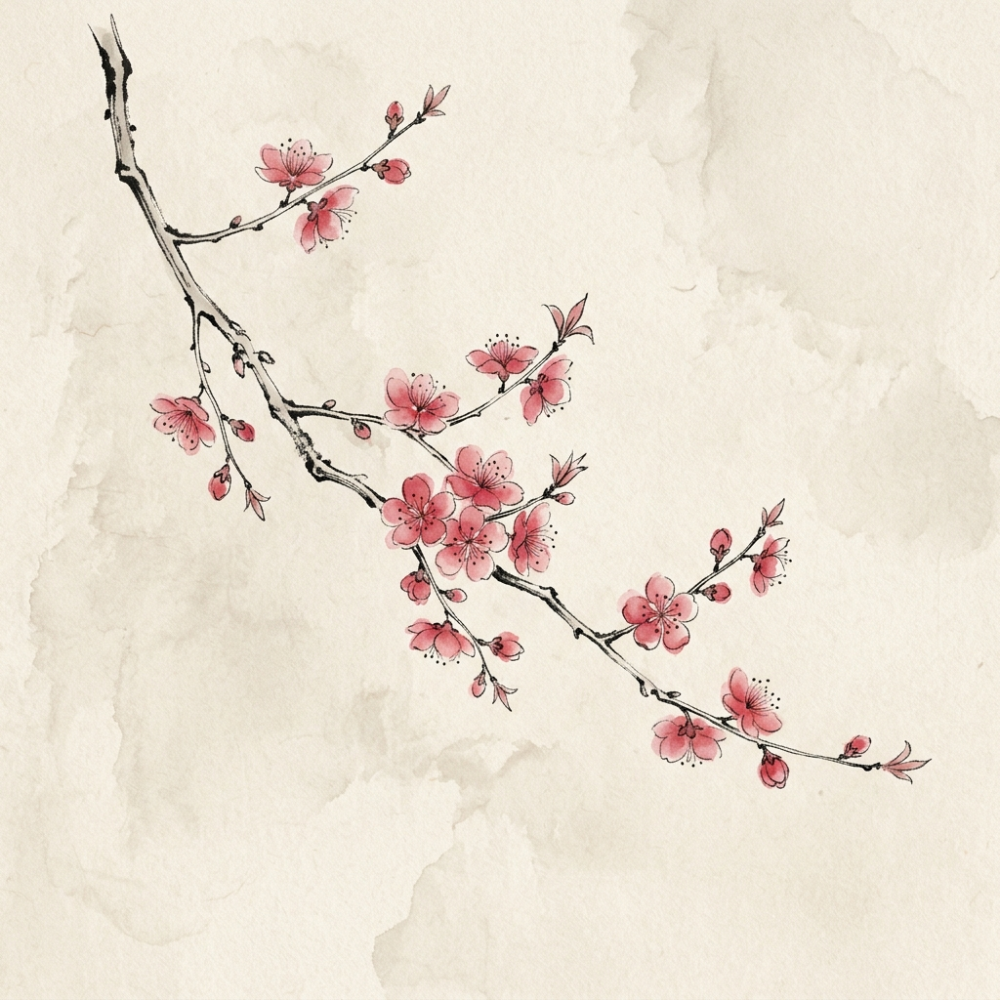

丙午三月 · 庭前
雨后初晴苔上绿
春日初融
春日初融
记录春雨润湿青苔的微距画面，泥土里散发着新芽的生机。
求知探索，格物致知
我喜欢传统国画与宣纸上的留白感。在这个网站的设计中，我尝试使用温润的浅色纸张背景，搭配黛青、茶褐与朱砂等传统色彩。我希望这个页面能够慢下来，呈现出一种不局促、有呼吸感的浏览节奏。
生活与灵感 · 影像花笺
记录春雨润湿青苔的微距画面，泥土里散发着新芽的生机。
清晨斜射的晨光穿透竹叶，在宣纸般的地面落下的墨色光影。

折扇上绘制的写意红梅，红英零星，在留白中感受风的吹拂。
一小盆生机勃勃的菖蒲，旁边是一本翻开的自学前端代码卡片。